margins is an effort to port Stata’s (closed source) margins command to R as an S3 generic method for calculating the marginal effects (or “partial effects”) of covariates included in model objects (like those of classes “lm” and “glm”). A plot method for the new “margins” class additionally ports the marginsplot command, and various additional functions support interpretation and visualization of such models.
Stata’s margins command is very simple and intuitive to use:
. import delimited mtcars.csv
. quietly reg mpg c.cyl##c.hp wt
. margins, dydx(*)
------------------------------------------------------------------------------
| Delta-method
| dy/dx Std. Err. t P>|t| [95% Conf. Interval]
-------------+----------------------------------------------------------------
cyl | .0381376 .5998897 0.06 0.950 -1.192735 1.26901
hp | -.0463187 .014516 -3.19 0.004 -.076103 -.0165343
wt | -3.119815 .661322 -4.72 0.000 -4.476736 -1.762894
------------------------------------------------------------------------------
. marginsplot
marginsplot
With margins in R, replicating Stata’s results is incredibly simple using just the margins() method to obtain average marginal effects and its summary() method to obtain Stata-like output:
library("margins")
x <- lm(mpg ~ cyl * hp + wt, data = mtcars)
(m <- margins(x))## Average marginal effects## lm(formula = mpg ~ cyl * hp + wt, data = mtcars)## cyl hp wt
## 0.03814 -0.04632 -3.12summary(m)## factor AME SE z p lower upper
## cyl 0.0381 0.5999 0.0636 0.9493 -1.1376 1.2139
## hp -0.0463 0.0145 -3.1909 0.0014 -0.0748 -0.0179
## wt -3.1198 0.6613 -4.7176 0.0000 -4.4160 -1.8236With the exception of differences in rounding, the above results match identically what Stata’s margins command produces. Using the plot() method also yields an aesthetically similar result to Stata’s marginsplot:
plot(m)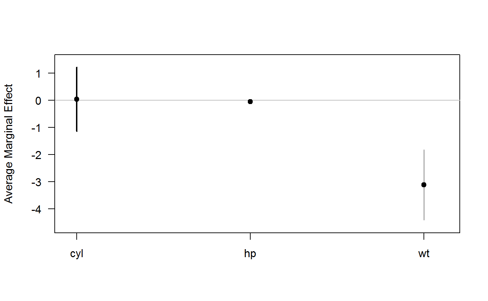
Using Optional Arguments in margins
margins is intended as a port of (some of) the features of Stata’s margins command, which includes numerous options for calculating marginal effects at the mean values of a dataset (i.e., the marginal effects at the mean), an average of the marginal effects at each value of a dataset (i.e., the average marginal effect), marginal effects at representative values, and any of those operations on various subsets of a dataset. (The functionality of Stata’s command to produce predictive margins is not ported, as this is easily obtained from the prediction package.) In particular, Stata provides the following options:
-
at: calculate marginal effects at (potentially representative) specified values (i.e., replacing observed values with specified replacement values before calculating marginal effects) -
atmeans: calculate marginal effects at the mean (MEMs) of a dataset rather than the default behavior of calculating average marginal effects (AMEs) -
over: calculate marginal effects (including MEMs and/or AMEs at observed or specified values) on subsets of the original data (e.g., the marginal effect of a treatment separately for men and women)
The at argument has been translated into margins() in a very similar manner. It can be used by specifying a list of variable names and specified values for those variables at which to calculate marginal effects, such as margins(x, at = list(hp=150)). When using at, margins() constructs modified datasets - using build_datalist() - containing the specified values and calculates marginal effects on each modified dataset, rbind-ing them back into a single “margins” object.
Stata’s atmeans argument is not implemented in margins() for various reasons, including because it is possible to achieve the effect manually through an operation like data$var <- mean(data$var, na.rm = TRUE) and passing the modified data frame to margins(x, data = data).
At present, margins() does not implement the over option. The reason for this is also simple: R already makes data subsetting operations quite simple using simple [ extraction. If, for example, one wanted to calculate marginal effects on subsets of a data frame, those subsets can be passed directly to margins() via the data argument (as in a call to prediction()).
The rest of this vignette shows how to use at and data to obtain various kinds of marginal effects, and how to use plotting functions to visualize those inferences.
Average Marginal Effects and Average Partial Effects
We can start by loading the margins package:
library("margins")We’ll use a simple example regression model based on the built-in mtcars dataset:
x <- lm(mpg ~ cyl + hp * wt, data = mtcars)To obtain average marginal effects (AMEs), we simply call margins() on the model object created by lm():
margins(x)## Average marginal effects## lm(formula = mpg ~ cyl + hp * wt, data = mtcars)## cyl hp wt
## -0.3652 -0.02527 -3.838The result is a data frame with special class "margins". "margins" objects are printed in a tidy summary format, by default, as you can see above. The only difference between a "margins" object and a regular data frame are some additional data frame-level attributes that dictate how the object is printed.
The default method calculates marginal effects for all variables included in the model (ala Stata’s , dydx(*) option). To limit calculation to only a subset of variables, use the variables argument:
summary(margins(x, variables = "hp"))## factor AME SE z p lower upper
## hp -0.0253 0.0105 -2.4046 0.0162 -0.0459 -0.0047In an ordinary least squares regression, there is really only one way of examining marginal effects (that is, on the scale of the outcome variable). In a generalized linear model (e.g., logit), however, it is possible to examine true “marginal effects” (i.e., the marginal contribution of each variable on the scale of the linear predictor) or “partial effects” (i.e., the contribution of each variable on the outcome scale, conditional on the other variables involved in the link function transformation of the linear predictor). The latter are the default in margins(), which implicitly sets the argument margins(x, type = "response") and passes that through to prediction() methods. To obtain the former, simply set margins(x, type = "link"). There’s some debate about which of these is preferred and even what to call the two different quantities of interest. Regardless of all of that, here’s how you obtain either:
x <- glm(am ~ cyl + hp * wt, data = mtcars, family = binomial)## Warning: glm.fit: fitted probabilities numerically 0 or 1 occurredmargins(x, type = "response")## Average marginal effects## glm(formula = am ~ cyl + hp * wt, family = binomial, data = mtcars)## cyl hp wt
## 0.02156 0.002667 -0.5158margins(x, type = "link") # the default## Average marginal effects
## glm(formula = am ~ cyl + hp * wt, family = binomial, data = mtcars)## cyl hp wt
## 0.5156 0.05151 -12.24Note that some other packages available for R, as well as Stata’s margins and mfx packages enable calculation of so-called “marginal effects at means” (i.e., the marginal effect for a single observation that has covariate values equal to the means of the sample as a whole). The substantive interpretation of these is fairly ambiguous. While it was once common practice to estimate MEMs - rather than AMEs or MERs - this is now considered somewhat inappropriate because it focuses on cases that may not exist (e.g., the average of a 0/1 variable is not going to reflect a case that can actually exist in reality) and we are often interested in the effect of a variable at multiple possible values of covariates, rather than an arbitrarily selected case that is deemed “typical” in this way. As such, margins() defaults to reporting AMEs, unless modified by the at argument to calculate average “marginal effects for representative cases” (MERs). MEMs could be obtained by manually specifying at for every variable in a way that respects the variables classes and inherent meaning of the data, but that functionality is not demonstrated here.
Using the at Argument
The at argument allows you to calculate marginal effects at representative cases (sometimes “MERs”) or marginal effects at means - or any other statistic - (sometimes “MEMs”), which are marginal effects for particularly interesting (sets of) observations in a dataset. This differs from marginal effects on subsets of the original data (see the next section for a demonstration of that) in that it operates on a modified set of the full dataset wherein particular variables have been replaced by specified values. This is helpful because it allows for calculation of marginal effects for counterfactual datasets (e.g., what if all women were instead men? what if all democracies were instead autocracies? what if all foreign cars were instead domestic?).
As an example, if we wanted to know if the marginal effect of horsepower (hp) on fuel economy differed across different types of automobile transmissions, we could simply use at to obtain separate marginal effect estimates for our data as if every car observation were a manual versus if every car observation were an automatic. The output of margins() is a simplified summary of the estimated marginal effects across the requested variable levels/combinations specified in at:
x <- lm(mpg ~ cyl + wt + hp * am, data = mtcars)
margins(x, at = list(am = 0:1))## Average marginal effects at specified values## lm(formula = mpg ~ cyl + wt + hp * am, data = mtcars)## at(am) cyl wt hp am
## 0 -0.9339 -2.812 -0.008945 1.034
## 1 -0.9339 -2.812 -0.026392 1.034Because of the hp * am interaction in the regression, the marginal effect of horsepower differs between the two sets of results. We can also specify more than one variable to at, creating a potentially long list of marginal effects results. For example, we can produce marginal effects at both levels of am and the values from the five-number summary (minimum, Q1, median, Q3, and maximum) of observed values of hp. This produces 2 * 5 = 10 sets of marginal effects estimates:
margins(x, at = list(am = 0:1, hp = fivenum(mtcars$hp)))## Average marginal effects at specified values## lm(formula = mpg ~ cyl + wt + hp * am, data = mtcars)## at(am) at(hp) cyl wt hp am
## 0 52 -0.9339 -2.812 -0.008945 2.6864
## 1 52 -0.9339 -2.812 -0.026392 2.6864
## 0 96 -0.9339 -2.812 -0.008945 1.9188
## 1 96 -0.9339 -2.812 -0.026392 1.9188
## 0 123 -0.9339 -2.812 -0.008945 1.4477
## 1 123 -0.9339 -2.812 -0.026392 1.4477
## 0 180 -0.9339 -2.812 -0.008945 0.4533
## 1 180 -0.9339 -2.812 -0.026392 0.4533
## 0 335 -0.9339 -2.812 -0.008945 -2.2509
## 1 335 -0.9339 -2.812 -0.026392 -2.2509Because this is a linear model, the marginal effects of cyl and wt do not vary across levels of am or hp. The minimum and Q1 value of hp are also the same, so the marginal effects of am are the same in the first two results. As you can see, however, the marginal effect of hp differs when am == 0 versus am == 1 (first and second rows) and the marginal effect of am differs across levels of hp (e.g., between the first and third rows). As should be clear, the at argument is incredibly useful for getting a better grasp of the marginal effects of different covariates.
This becomes especially apparent when a model includes power-terms (or any other alternative functional form of a covariate). Consider, for example, the simple model of fuel economy as a function of weight, with weight included as both a first- and second-order term:
x <- lm(mpg ~ wt + I(wt^2), data = mtcars)
summary(x)##
## Call:
## lm(formula = mpg ~ wt + I(wt^2), data = mtcars)
##
## Residuals:
## Min 1Q Median 3Q Max
## -3.483 -1.998 -0.773 1.462 6.238
##
## Coefficients:
## Estimate Std. Error t value Pr(>|t|)
## (Intercept) 49.9308 4.2113 11.856 1.21e-12 ***
## wt -13.3803 2.5140 -5.322 1.04e-05 ***
## I(wt^2) 1.1711 0.3594 3.258 0.00286 **
## ---
## Signif. codes: 0 '***' 0.001 '**' 0.01 '*' 0.05 '.' 0.1 ' ' 1
##
## Residual standard error: 2.651 on 29 degrees of freedom
## Multiple R-squared: 0.8191, Adjusted R-squared: 0.8066
## F-statistic: 65.64 on 2 and 29 DF, p-value: 1.715e-11Looking only at the regression results table, it is actually quite difficult to understand the effect of wt on fuel economy because it requires performing mental multiplication and addition on all possible values of wt. Using the at option to margins, you could quickly obtain a sense of the average marginal effect of wt at a range of plausible values:
margins(x, at = list(wt = fivenum(mtcars$wt)))## Average marginal effects at specified values## lm(formula = mpg ~ wt + I(wt^2), data = mtcars)## at(wt) wt
## 1.513 -9.8366
## 2.542 -7.4254
## 3.325 -5.5926
## 3.650 -4.8314
## 5.424 -0.6764The marginal effects in the first column of results reveal that the average marginal effect of wt is large and negative except when wt is very large, in which case it has an effect not distinguishable from zero. We can easily plot these results using the cplot() function to see the effect visually in terms of either predicted fuel economy or the marginal effect of wt:
cplot(x, "wt", what = "prediction", main = "Predicted Fuel Economy, Given Weight")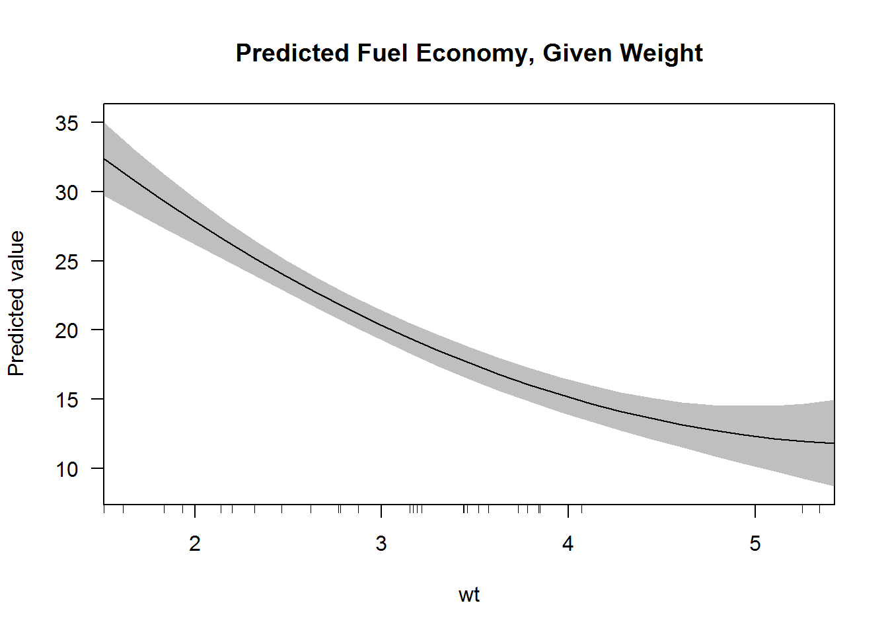
cplot(x, "wt", what = "effect", main = "Average Marginal Effect of Weight")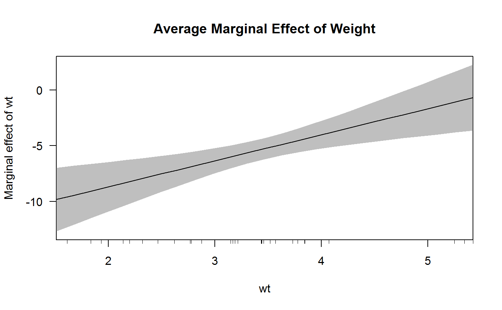
A really nice feature of Stata’s margins command is that it handles factor variables gracefully. This functionality is difficult to emulate in R, but the margins() function does its best. Here we see the marginal effects of a simple regression that includes a factor variable:
x <- lm(mpg ~ factor(cyl) * hp + wt, data = mtcars)
margins(x)## Average marginal effects## lm(formula = mpg ~ factor(cyl) * hp + wt, data = mtcars)## hp wt cyl6 cyl8
## -0.04475 -3.06 1.473 0.8909margins() recognizes the factor and displays the marginal effect for each level of the factor separately. (Caveat: this may not work with certain at specifications, yet.)
Subsetting
Stata’s margins command includes an over() option, which allows you to very easily calculate marginal effects on subsets of the data (e.g., separately for men and women). This is useful in Stata because the program only allows one dataset in memory. Because R does not impose this restriction and further makes subsetting expressions very simple, that feature is not really useful and can be achieved using standard subsetting notation in R:
x <- lm(mpg ~ factor(cyl) * am + hp + wt, data = mtcars)
# automatic vehicles
margins(x, data = mtcars[mtcars$am == 0, ])## Average marginal effects## lm(formula = mpg ~ factor(cyl) * am + hp + wt, data = mtcars)## am hp wt cyl6 cyl8
## 1.706 -0.03115 -2.441 -1.715 -1.586# manual vehicles
margins(x, data = mtcars[mtcars$am == 1, ])## Average marginal effects
## lm(formula = mpg ~ factor(cyl) * am + hp + wt, data = mtcars)## am hp wt cyl6 cyl8
## 2.167 -0.03115 -2.441 -4.218 -2.656Because a "margins" object is just a data frame, it is also possible to obtain the same result by subsetting the output of margins():
m <- margins(x)
split(m, m$am)## $`0`## Average marginal effects## lm(formula = mpg ~ factor(cyl) * am + hp + wt, data = mtcars)## am hp wt cyl6 cyl8
## 1.706 -0.03115 -2.441 -1.715 -1.586
##
## $`1`## Average marginal effects
## lm(formula = mpg ~ factor(cyl) * am + hp + wt, data = mtcars)## am hp wt cyl6 cyl8
## 2.167 -0.03115 -2.441 -4.218 -2.656Marginal Effects Plots
Using margins() to calculate marginal effects enables several kinds of plotting. The built-in plot() method for objects of class "margins" creates simple diagnostic plots for examining the output of margins() in visual rather than tabular format. It is also possible to use the output of margins() to produce more typical marginal effects plots that show the marginal effect of one variable across levels of another variable. This section walks through the plot() method and then shows how to produce marginal effects plots using base graphics.
The plot() method for “margins” objects
The margins package implements a plot() method for objects of class "margins" (seen above). This produces a plot similar (in spirit) to the output of Stata’s marginsplot. It is highly customizable, but is meant primarily as a diagnostic tool to examine the results of margins(). It simply produces, by default, a plot of marginal effects along with 95% confidence intervals for those effects. The confidence level can be modified using the levels argument, which is vectorized to allow multiple levels to be specified simultaneously.
More advanced plotting
There are two common ways of visually representing the substantive results of a regression model: (1) fitted values plots, which display the fitted conditional mean outcome across levels of a covariate, and (2) marginal effects plots, which display the estimated marginal effect of a variable across levels of a covariate. This section discusses both approaches.
Fitted value plots can be created using cplot() (to provide conditional predicted value plots or conditional effect plots) and both the persp() method and image() method for "lm" objects, which display the same type of relationships in three-dimensions (i.e., across two conditioning covariates).
For example, we can use cplot() to quickly display the predicted fuel economy of a vehicle from a model:
x <- lm(mpg ~ cyl + wt * am, data = mtcars)
cplot(x, "cyl")
cplot(x, "wt")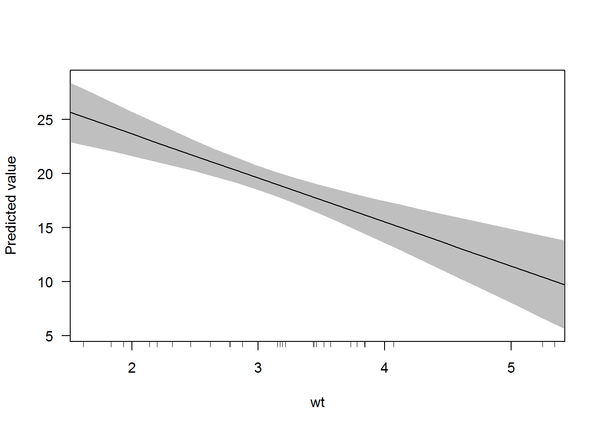
The slopes of the predicted value lines are the marginal effect of wt when am == 0 and am == 1. We can obtain these slopes using margins() and specifying the at argument:
margins(x, at = list(am = 0:1))## Average marginal effects at specified values## lm(formula = mpg ~ cyl + wt * am, data = mtcars)## at(am) cyl wt am
## 0 -1.181 -2.369 -1.566
## 1 -1.181 -6.566 -1.566Another plotting function - the persp() method for “lm” objects - gives even more functionality:
persp(x, "cyl", "wt")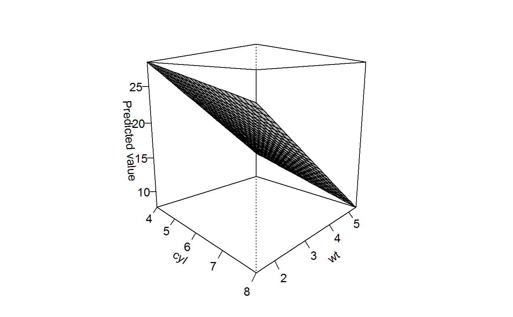
This three-dimensional representation can be easily rotated using the theta and phi arguments. If multiple values are specified for each, facetting is automatically provided:
persp(x, "cyl", "wt", theta = c(0, 90))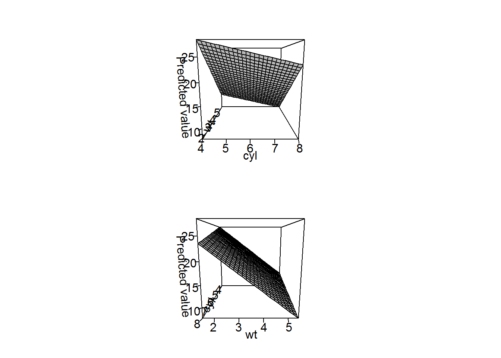
Because these three-dimensional representations can be challenging to interpret given the distortion of displaying a three-dimensional surface in two dimensions, the image() method provides a “flat” alternative to convey the same information using the same semantics:
image(x, "cyl", "wt")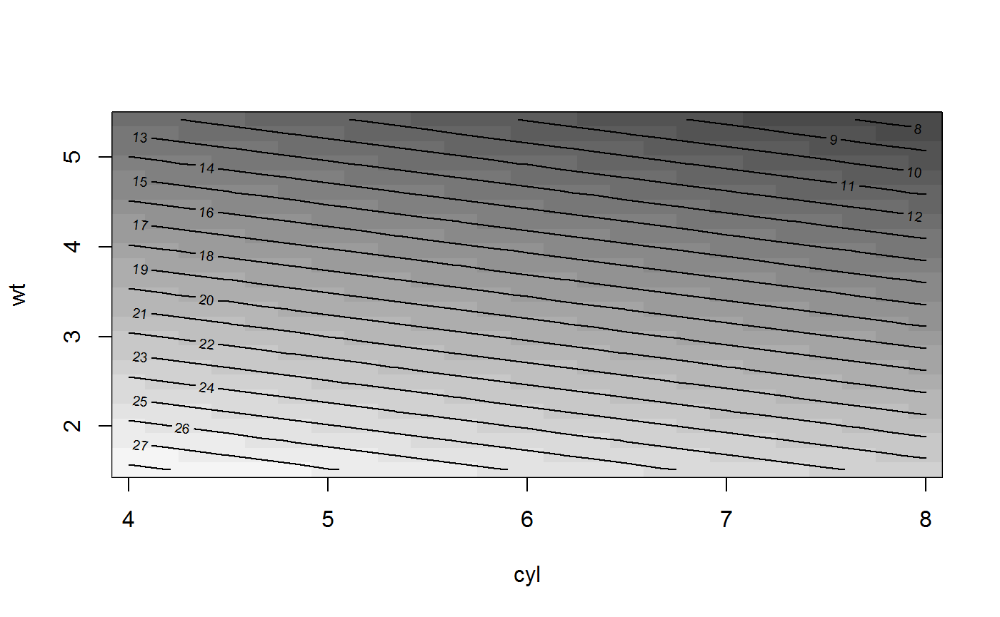
Interpreting Interactions with Marginal Effects
One of principal motives for developing margins is to facilitate the substantive interpretation of interaction terms in regression models. A large literature now describes the difficulties of such interpretations in both linear and non-linear regression models. This vignette walks through some of that interpretation.
Interactions in OLS
If we begin with a simple example of a regression model with an interaction term, the difficulties of interpretation become almost immediately clear. In this first model, we’ll use the mtcars dataset to understand vehicle fuel economy as a function of drat (rear axle ratio), wt (weight), and their interaction. As Brambor et al. (2006) make clear, the most common mistake in such models is estimating the model without the constituent variables. We can see why this is a problem by estimating the model with and without the constituent terms:
summary(lm(mpg ~ drat:wt, data = mtcars))##
## Call:
## lm(formula = mpg ~ drat:wt, data = mtcars)
##
## Residuals:
## Min 1Q Median 3Q Max
## -7.3319 -2.3669 -0.6585 2.0952 8.2124
##
## Coefficients:
## Estimate Std. Error t value Pr(>|t|)
## (Intercept) 40.6488 3.1335 12.972 7.77e-14 ***
## drat:wt -1.8339 0.2728 -6.723 1.89e-07 ***
## ---
## Signif. codes: 0 '***' 0.001 '**' 0.01 '*' 0.05 '.' 0.1 ' ' 1
##
## Residual standard error: 3.87 on 30 degrees of freedom
## Multiple R-squared: 0.6011, Adjusted R-squared: 0.5878
## F-statistic: 45.2 on 1 and 30 DF, p-value: 1.886e-07summary(lm(mpg ~ drat * wt, data = mtcars))##
## Call:
## lm(formula = mpg ~ drat * wt, data = mtcars)
##
## Residuals:
## Min 1Q Median 3Q Max
## -3.8913 -1.8634 -0.3398 1.3247 6.4730
##
## Coefficients:
## Estimate Std. Error t value Pr(>|t|)
## (Intercept) 5.550 12.631 0.439 0.6637
## drat 8.494 3.321 2.557 0.0162 *
## wt 3.884 3.798 1.023 0.3153
## drat:wt -2.543 1.093 -2.327 0.0274 *
## ---
## Signif. codes: 0 '***' 0.001 '**' 0.01 '*' 0.05 '.' 0.1 ' ' 1
##
## Residual standard error: 2.839 on 28 degrees of freedom
## Multiple R-squared: 0.7996, Adjusted R-squared: 0.7782
## F-statistic: 37.25 on 3 and 28 DF, p-value: 6.567e-10Clearly the models produce radically different estimates and goodness-of-fit to the original data. As a result, it’s important to use all constituent terms in the model even if they are thought a priori to have coefficients of zero. Now let’s see how we can use margins() to interpret a more complex three-way interaction:
x1 <- lm(mpg ~ drat * wt * am, data = mtcars)
summary(margins(x1))## factor AME SE z p lower upper
## am -2.4729 3.0342 -0.8150 0.4151 -8.4198 3.4739
## drat 0.8882 1.7047 0.5210 0.6023 -2.4529 4.2293
## wt -5.8203 0.8769 -6.6373 0.0000 -7.5390 -4.1016By default, margins() will supply the average marginal effects of the constituent variables in the model. Note how the drat:wt term is not expressed in the margins results. This is because the contribution of the drat:wt term is incorporated into the marginal effects for the constituent variables. Because there is a significant interaction, we can see this by examining margins at different levels of the constituent variables. The drat variable is continuous, taking values from 2.76 to 4.93:
margins(x1, at = list(drat = range(mtcars$drat)))## Average marginal effects at specified values## lm(formula = mpg ~ drat * wt * am, data = mtcars)## at(drat) drat wt am
## 2.76 0.8882 -4.989 -0.04699
## 4.93 0.8882 -7.271 -6.09246Now margins() returns two "margins" objects, one for each combination of values specified in drat. We can see in the above that cars with a low axle ratio (drat == 2.76), the average marginal effect of weight is a reduction in fuel economy of 4.99 miles per gallon. For vehicles with a higher ratio (drat == 4.93), this reduction in fuel economy is lower at 7.27 miles per gallon. Yet this is also not fully accurate because it mixes the automatic and manual cars, so we may want to further break out the results by transmission type.
The at argument accepts multiple named combinations of variables, so we can specify particular values of both drat and wt and am for which we would like to understand the marginal effect of each variable. For example, we might want to look at the effects of each variable for vehicles with varying axle ratios but also across some representative values of the wt distribution, separately for manual and automatic vehicles. (Note that the order of values in the at object does matter and it can inclue variables that are not explicitly being modelled).
wts <- prediction::seq_range(mtcars$wt, 10)
m1 <- margins(x1, at = list(wt = wts, drat = range(mtcars$drat), am = 0:1))
nrow(m1)/nrow(mtcars)## [1] 40As you can see above, the result is a relatively long data frame (basically a stack of "margins" objects specific to each of the - 40 - requested combinations of at values). We can examine the whole stack using summary(), but it’s an extremely long output (one row for each estimate times the number of unique combinations of at values, so 120 rows in this instance).
An easier way to understand all of this is to use graphing. The cplot() function, in particular, is useful here. We can, for example, plot the marginal effect of axle ratio across levels of vehicle weight, separately for automatic vehicles (in red) and manual vehicles (in blue):
cplot(x1, x = "wt", dx = "drat", what = "effect",
data = mtcars[mtcars[["am"]] == 0,],
col = "red", se.type = "shade",
xlim = range(mtcars[["wt"]]), ylim = c(-20, 20),
main = "AME of Axle Ratio on Fuel Economy")
cplot(x1, x = "wt", dx = "drat", what = "effect",
data = mtcars[mtcars[["am"]] == 1,],
col = "blue", se.type = "shade",
draw = "add")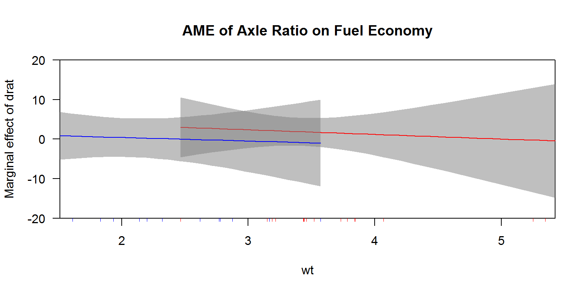
cplot() only provides AME displays over the observed range of the data (noted by the rug), so we can see that it would be inappropriate to compare the average marginal effect of axle ratio for the two transmission types at extreme values of weight.
Another use of these types of plots can be to interpret power terms, to see the average marginal effect of a variable across values of itself. Consider the following, for example:
x1b <- lm(mpg ~ am * wt + am * I(wt^2), data = mtcars)
cplot(x1b, x = "wt", dx = "wt", what = "effect",
data = mtcars[mtcars[["am"]] == 0,],
col = "red", se.type = "shade",
xlim = range(mtcars[["wt"]]), ylim = c(-20, 20),
main = "AME of Weight on Fuel Economy")
cplot(x1b, x = "wt", dx = "wt", what = "effect",
data = mtcars[mtcars[["am"]] == 1,],
col = "blue", se.type = "shade",
draw = "add")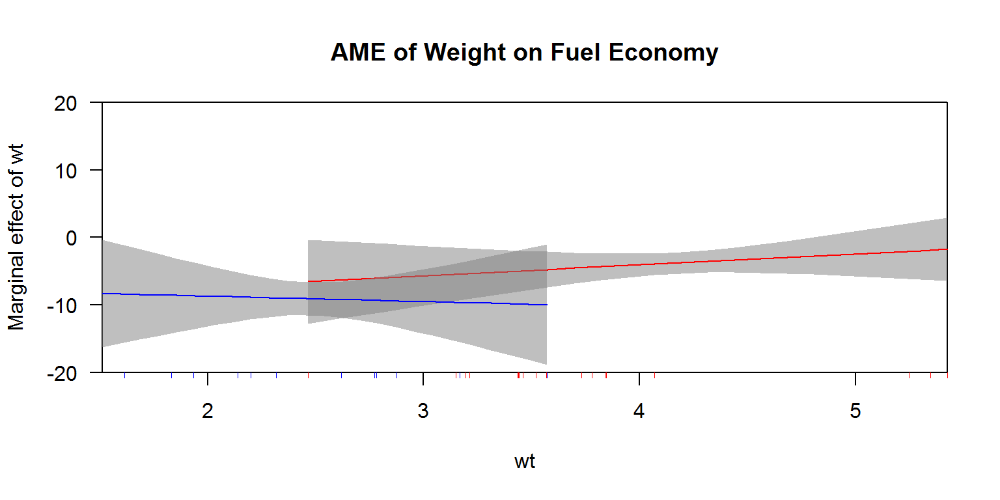
Note, however, that interpreting these kind of continuous-by-continuous interaction terms is slightly more complex because the marginal effect of both constituent variables always depends on the level of the other variable. We’ll use the horsepower (hp) variable from mtcars to understand this type of interaction. We can start by looking at the AMEs:
x2 <- lm(mpg ~ hp * wt, data = mtcars)
margins(x2)## Average marginal effects## lm(formula = mpg ~ hp * wt, data = mtcars)## hp wt
## -0.03051 -4.132On average across the cases in the dataset, the effect of horsepower is slightly negative. On average, the effect of weight is also negative. Both decrease fuel economy. But what is the marginal effect of each variable across the range of values we actually observe in the data. To get a handle on this, we can use the persp() method provided by margins.
persp(x2, "wt", "hp", theta = c(45, 135, 225, 315), what = "effect")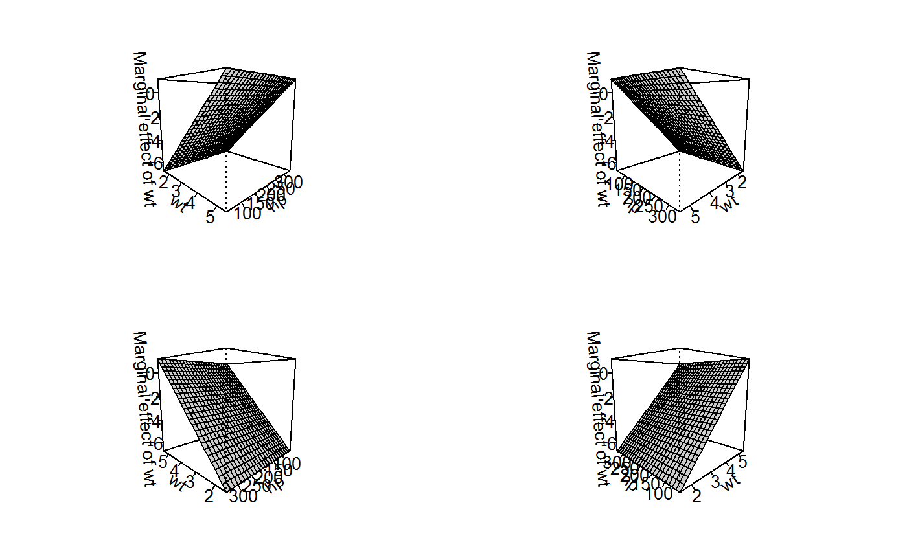
To make sense of this set of plots (actually, the same plot seen from four different angles), it will also be helpful to have the original regression results close at-hand:
summary(x2)##
## Call:
## lm(formula = mpg ~ hp * wt, data = mtcars)
##
## Residuals:
## Min 1Q Median 3Q Max
## -3.0632 -1.6491 -0.7362 1.4211 4.5513
##
## Coefficients:
## Estimate Std. Error t value Pr(>|t|)
## (Intercept) 49.80842 3.60516 13.816 5.01e-14 ***
## hp -0.12010 0.02470 -4.863 4.04e-05 ***
## wt -8.21662 1.26971 -6.471 5.20e-07 ***
## hp:wt 0.02785 0.00742 3.753 0.000811 ***
## ---
## Signif. codes: 0 '***' 0.001 '**' 0.01 '*' 0.05 '.' 0.1 ' ' 1
##
## Residual standard error: 2.153 on 28 degrees of freedom
## Multiple R-squared: 0.8848, Adjusted R-squared: 0.8724
## F-statistic: 71.66 on 3 and 28 DF, p-value: 2.981e-13If we express the regression results as an equation: mpg = 49.81 + (-0.12 * hp) + (-8.22 * wt) + (0.03 * hp*wt), it will be easy to see how the three-dimensional surface above reflects various partial derivatives of the regression equation.
For example, if we take the partial derivative of the regression equation with respect to wt (i.e., the marginal effect of weight), the equation is: d_mpg/d_wt = (-8.22) + (0.03 * hp). This means that the marginal effect of weight is large and negative when horsepower is zero (which never occurs in the mtcars dataset) and decreases in magnitude and becoming more positive as horsepower increases. We can see this in the above graph that the marginal effect of weight is constant across levels of weight because wt does not enter into the partial derivative. Across levels, of horsepower, however, the marginal effect becomes more positive. This is clear looking at the “front” or “back” edges of the surface, which are straight-linear increases. The slope of those edges is 0.03 (the coefficient on the interaction term).
If we then take the partial derivative with respect to hp (to obtain the marginal effect of horsepower), the equation is: d_mpg/d_hp = (-0.12) + (0.03 * wt). When wt is zero, this partial derivative (or marginal effect) is -0.12 miles/gallon. The observed range of wt, however, is only: 1.513, 5.424. We can see these results in the analogous graph of the marginal effects of horsepower (below). The “front” and “back” edges of the graph are now flat (reflecting how the marginal effect of horsepower is constant across levels of horsepower), while the “front-left” and “right-back” edges of the surface are lines with slope 0.03, reflecting the coefficient on the interaction term.
persp(x2, "hp", "wt", theta = c(45, 135, 225, 315), what = "effect")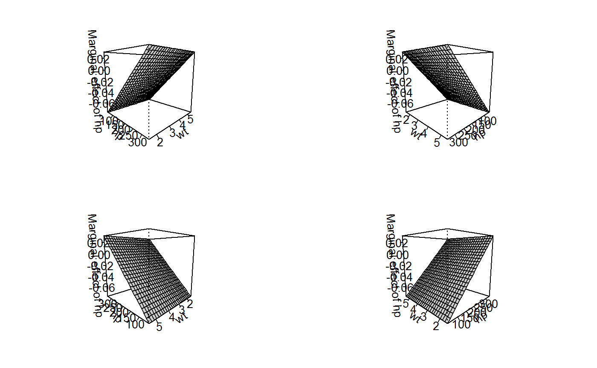
An alternative way of plotting these results is to take “slices” of the three-dimensional surface and present them in a two-dimensional graph, similar to what we did above with the indicator-by-continuous approach. That strategy would be especially appropriate for a categorical-by-continuous interaction where the categories of the first variable did not necessarily have a logical ordering sufficient to draw a three-dimensional surface.
ggplot2 examples
It should be noted that cplot() returns a fairly tidy data frmae, making it possible to use ggplot2 as an alternative plotting package to display the kinds of relationships of typical interest. For example, returning to our earlier example:
x1 <- lm(mpg ~ drat * wt * am, data = mtcars)
cdat <- cplot(x1, "wt", draw = FALSE)
head(cdat)## xvals yvals upper lower
## 1 1.513000 28.66765 33.04903 24.28627
## 2 1.675958 27.71126 31.71243 23.71010
## 3 1.838917 26.75488 30.38319 23.12656
## 4 2.001875 25.79849 29.06385 22.53313
## 5 2.164833 24.84210 27.75810 21.92610
## 6 2.327792 23.88571 26.47147 21.29996From this structure, it is very easy to draw a predicted values plot
library("ggplot2")
ggplot(cdat, aes(x = xvals)) +
geom_line(aes(y = yvals)) +
geom_line(aes(y = upper), linetype = 2) +
geom_line(aes(y = lower), linetype = 2) +
geom_hline(yintercept = 0) +
ggtitle("Predicted Fuel Economy (mpg) by Weight") +
xlab("Weight (1000 lbs)") + ylab("Predicted Value")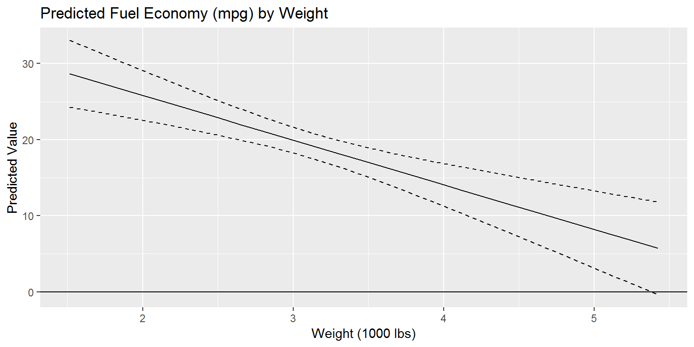
And the same thing is possible with a marginal effect calculation:
cdat <- cplot(x1, "wt", "drat", what = "effect", draw = FALSE)
ggplot(cdat, aes(x = xvals)) +
geom_line(aes(y = yvals)) +
geom_line(aes(y = upper), linetype = 2) +
geom_line(aes(y = lower), linetype = 2) +
geom_hline(yintercept = 0) +
ggtitle("AME of Axle Ratio on Fuel Economy (mpg) by Weight") +
xlab("Weight (1000 lbs)") + ylab("AME of Axle Ratio")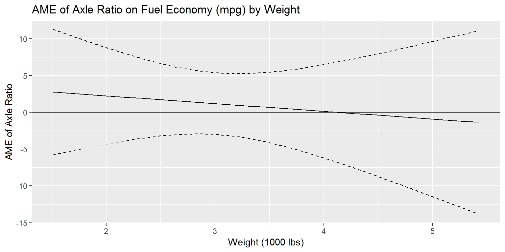
Interactions in Logit
Interaction terms in generalized linear models have been even more controversial than interaction terms in linear regression (Norton et al. 2004). The result is a realization over the past decade that almost all extant interpretations of GLMs with interaction terms (or hypothesizing moderating effects) have been misinterpreted. Stata’s margins command and the debate that preceded it have led to a substantial change in analytic practices.
For this, we’ll use the Pima.te dataset from MASS, which should be preinstalled in R, but we’ll manually load it just in case:
utils::data(Pima.te, package = "MASS")
head(Pima.te)## npreg glu bp skin bmi ped age type
## 1 6 148 72 35 33.6 0.627 50 Yes
## 2 1 85 66 29 26.6 0.351 31 No
## 3 1 89 66 23 28.1 0.167 21 No
## 4 3 78 50 32 31.0 0.248 26 Yes
## 5 2 197 70 45 30.5 0.158 53 Yes
## 6 5 166 72 19 25.8 0.587 51 YesThis dataset contains data on 332 women, including whether or not they are diabetic (type). We’ll examine a simple model with an interaction term between age and a skin thickness measure to explain diabetes status in these women:
summary(g1 <- glm(type ~ age * skin, data = Pima.te, family = binomial))##
## Call:
## glm(formula = type ~ age * skin, family = binomial, data = Pima.te)
##
## Deviance Residuals:
## Min 1Q Median 3Q Max
## -1.9474 -0.8654 -0.5208 1.1261 2.1079
##
## Coefficients:
## Estimate Std. Error z value Pr(>|z|)
## (Intercept) -7.880929 1.469932 -5.361 8.26e-08 ***
## age 0.164912 0.042398 3.890 0.00010 ***
## skin 0.177608 0.044946 3.952 7.77e-05 ***
## age:skin -0.003628 0.001316 -2.756 0.00585 **
## ---
## Signif. codes: 0 '***' 0.001 '**' 0.01 '*' 0.05 '.' 0.1 ' ' 1
##
## (Dispersion parameter for binomial family taken to be 1)
##
## Null deviance: 420.3 on 331 degrees of freedom
## Residual deviance: 364.1 on 328 degrees of freedom
## AIC: 372.1
##
## Number of Fisher Scoring iterations: 4Logit models (like all GLMs) present the dual challenges of having coefficients that are directly uninterpretable and marginal effects that depend on the values of the data. As a result, we can see coefficients and statistical significance tests above but it’s hard to make sense of those results without converting them into a more intuitive quantity, such as the predicted probability of having diabetes. We can see that increasing age and increasing skin thickness are associated with higher rates of diabetes, but the negative coefficient on the interaction term makes it hard to express the substantive size of these relationships. We can use margins to achieve this. By default, however, margins() reports results on the response scale (thus differing from the default behavior of stats::predict()):
margins(g1)## Average marginal effects## glm(formula = type ~ age * skin, family = binomial, data = Pima.te)## age skin
## 0.009283 0.01064These marginal effects reflect, on average across all of the cases in our data, how much more likely a woman is to have diabetes. Because this is an instantaneous effect, it can be a little hard to conceptualize. I find it helpful to take a look at a predicted probability plot to understand what is going on. Let’s take a look, for example, at the effect of age on the probability of having diabetes:
cplot(g1, "age")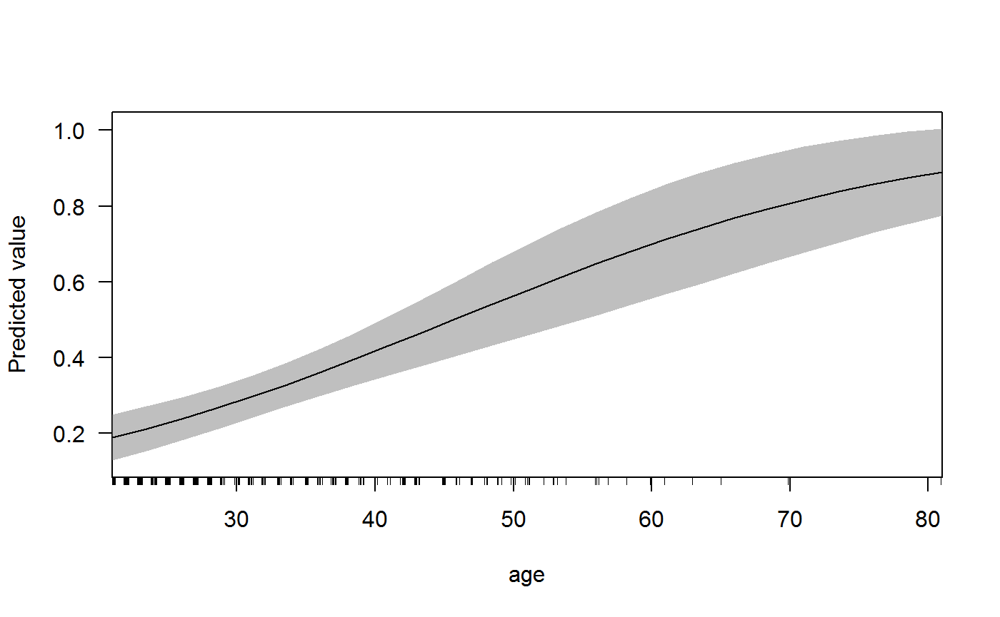
The above graph shows that as age increase, the probability of having diabetes increases. When a woman is 20 years old, the probability is about .20 whereas when a woman is 80, the probability is about 0.80. In essence, the marginal effect of age reported above is the slope of this predicted probability plot at the mean age of women in the dataset (which is 31.3162651). Clearly, this quantity is useful (it’s the impact of age for the average-aged woman) but the logit curve shows that the marginal effect of age differs considerably across ages and, as we know from above with linear models, also depends on the other variable in the interaction (skin thickness). To really understand what is going on, we need to graph the data. Let’s look at the perspective plot like the one we drew for the OLS model, above:
persp(g1, theta = c(45, 135, 225, 315), what = "prediction")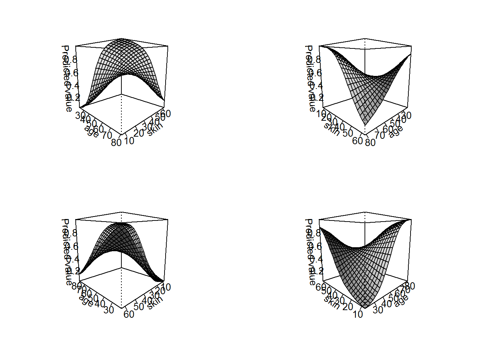
This graph is much more complicated than the analogous graph for an OLS model, this is because of the conversion between the log-odds scale of the linear predictors and the distribution of the data. What we can see is that the average marginal effect of age (across all of the women in our dataset) is highest when a woman is middle age and skin thickness is low. In these conditions, the marginal change in the probability of diabetes is about 3%, but the AME of age is nearly zero at higher and lower ages. Indeed, as skin thickness increases, the marginal effect of age flattens out and actually becomes negative (such that increasing age actually decreases the probability of diabetes for women with thick arms).
Now let’s examine the average marginal effects of skin thickness across levels of age and skin thickness:
persp(g1, theta = c(45, 135, 225, 315), what = "effect")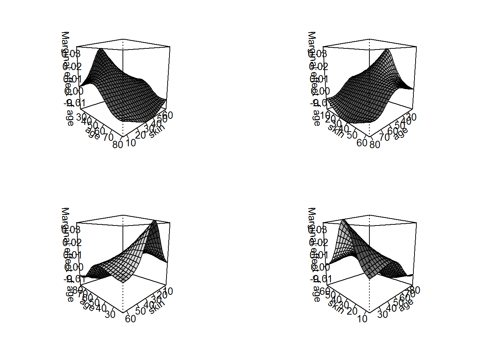
This graphs is somewhat flatter, indicating that the average marginal effects of skin thickness vary less than those for age. Yet, the AME of skin thickness is as high as 2% when age is low and skin thickness is high. Interestingly, however, this effect actually becomes negative as age increases. The marginal effect of skin thickness is radically different for young and old women.
For either of these cases, it would also be appropriate to draw two-dimensional plots of “slides” of these surfaces and incorporate measures of uncertainty. It is extremely difficult to convey standard errors or confidence intervals in a three-dimensional plot, so those could be quite valuable.
It is also worth comparing the above graphs to those that would result from a model without the interaction term between age and skin. It looks quite different (note, however, that it is also drawn from a higher perspective to better see the shape of the surface):
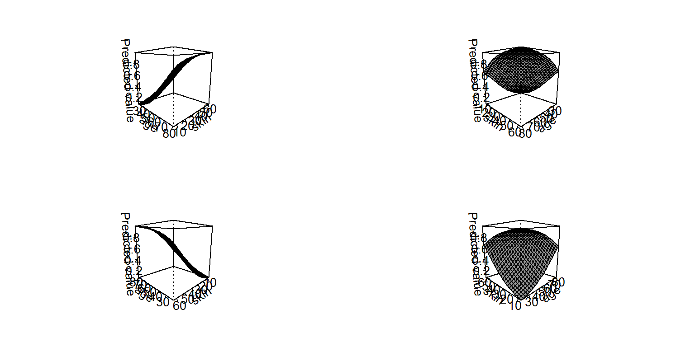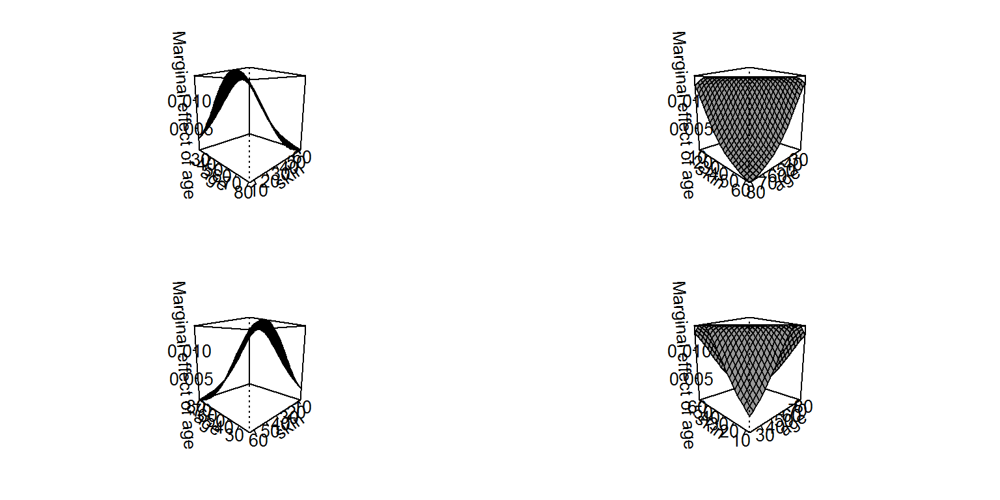
Our inferences about the impact of a variable on the outcome in a GLM therefore depend quite heavily on how the interaction is modelled. It also worth pointing out that the surface of the AMEs on the log-odds (linear) scale are actually flat (as in an OLS model), so the the curved shape of the plot immediately above reflects only the conversion of the effects from the linear scale to the probability scale (and the distributions of the covariates), whereas the much more unusual surface from earlier reflects that conversion and the interaction between the two variables (and the distributions thereof). If we were to plot the interaction model on the scale of the log-odds, it would look much more like the plot from the OLS models (this is left as an exercise to the reader).
References
Bartus, Tamas. 2005. “Estimation of marginal effects using margeff.” Stata Journal 5: 309-329.
Brambor, Thomas, William Clark & Matt Golder. 2006. “Understanding Interaction Models: Improving Empirical Analyses.” Political Analysis 14: 63-82.
Greene, William H. 2012. Econometric Analysis. 7th ed. Upper Saddle River, NJ: Prentice Hall.
Long, J. Scott. 1997. Regression Models for Categorical and Limited Dependent Variables. Sage Publications: Thousand Oaks, CA.
Norton, Edward C., Hua Wang, and Chunrong Ai. 2004. “Computing interaction effects and standard errors in logit and probit models.” The Stata Journal 4(2): 154-167.
Stata Corporation. “margins”. Software Documentation. Available from: http://www.stata.com/manuals13/rmargins.pdf.
Williams, Richard. 2012. “Using the margins command to estimate and interpret adjusted predictions and marginal effects.” Stata Journal 12: 308-331.